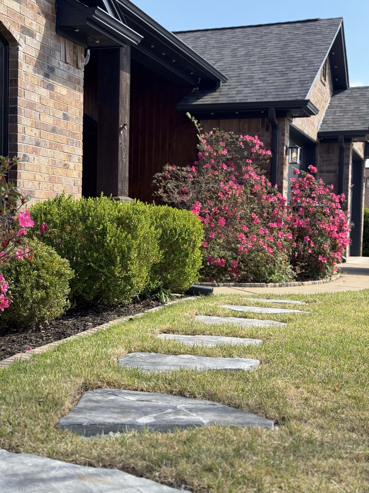

Leaf Removal in Hallsville, TX
Professional leaf removal serving Hallsville and surrounding East Texas communities.
Get a Free Quote in HallsvilleTrusted Leaf Removal Company Serving Hallsville, TX
Yard Dog Landscapes is the leaf removal Hallsville TX homeowners trust to show up, do the work right, and treat the property like our own. We've been working yards across Harrison County since 2017, and Hallsville sits in our regular service area alongside Longview and Marshall. When you call us for leaf removal Hallsville Texas, you get a local crew, a written estimate, and the same standards on every visit.
Hallsville sits in the heart of East Texas, where hot summers, clay-heavy soil, and stretches of heavy spring rain shape what your yard actually needs. Heavy leaf drop in East Texas typically runs from early November through January, with post-oak, sweetgum, and pecan leaves piling up fast after the first cold snap. Yard Dog Landscapes Hallsville clients get a service plan tuned to the local climate — not a one-size-fits-all script — because East Texas leaf removal only works when the schedule and the methods match the ground.
From routine leaf removal to bigger seasonal projects, our crew handles Hallsville properties of every size. We also serve nearby Longview, Marshall, and White Oak, plus the rest of Harrison County. Call (903) 844-6877 or request a free quote online — we walk every property in person before we send a price.
What's Included With Leaf Removal in Hallsville
Leaf Removal we've done around East Texas.



Why Hallsville Homeowners Choose Yard Dog Landscapes
Local crew, local knowledge
Familiar with East Texas soil, grass, and climate — because we work it every day.
Free on-site quotes within 24 hours
We walk the property in person and send a written, itemized estimate fast.
Licensed, insured, family-owned since 2017
Same crew, same standards, every visit. Fully licensed and insured.
Frequently Asked Questions
Do you offer leaf removal contracts in Hallsville, TX?
Yes. Yard Dog Landscapes is a family-owned company that's been serving Hallsville and the rest of Harrison County since 2017, and we offer flexible service agreements for leaf removal. Whether you want a one-time service or recurring work tied to the season, we'll write up a clear, itemized estimate and stick to it.
How often should I schedule leaf removal in Hallsville?
Most properties need at least two full cleanups during peak leaf drop — usually one mid-season and a second after the last leaves come down. Larger lots with mature trees often book a third visit. Every Hallsville property is a little different, so we'll walk yours and recommend a schedule that fits how the yard actually grows.
What areas near Hallsville do you serve?
Yard Dog Landscapes serves Hallsville, plus nearby Longview, Marshall, White Oak, and surrounding Harrison County communities. If you're not sure whether you're in our service area, give us a call at (903) 844-6877 — we cover most of East Texas.